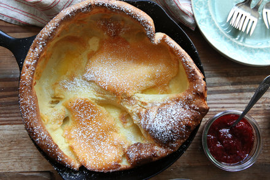

Dutch Baby

An incredibly buttery, elegant, fluffy dutch baby pancake.
Preheat a cast iron skillet in the oven, melt some butter,
and use a blender to mix the ingredients! Be sure to watch the show as the dutch baby
puffs and rises up just before you finish the bake. This is my kids' favorite part.
Dutch baby's can be topped with sweet condiments, for a breakfast centerpiece, or as a savory side dish at any meal.
our family loves it with a squeeze of fresh lemon juice, fresh or frozen blueberries, and generous dusting of powdered sugar.
Ingredients
- 2/3C Flour
- 2/3 Milk
- 3 Eggs
- 4TBSP Butter
- 1/2TSP Vanilla Extract
Directions
- Preheat skillet in oven at 450, on center rack
- Add milk, eggs, vanilla, and flour to blender. Blend on med - hi, until smooth.
- When oven is heated, add butter to skillet.
- Once butter is Melted, add batter to skillet and bake for 20 - 22 minutes.
- When baking finishes, allow dutch baby to rest, and deflate before serving.